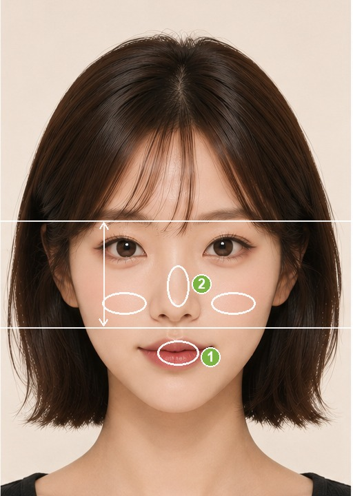
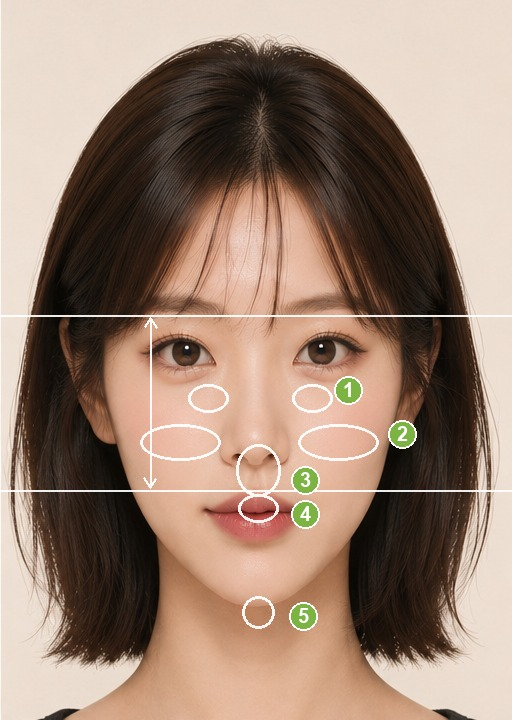

Makeup Guide by Midface Ratio중안부 비율별 메이크업 가이드中顔面の長さ別メイクガイド中庭比例对应妆容指南中庭比例對應妝容指南
Balance your measured midface (brow to nose base) with makeup. A guide, not a rule — your features come first.측정된 중안부(미간~코밑) 비율에 맞춰 메이크업으로 균형을 잡아보세요. 정답이 아닌 참고용 가이드입니다.測定された中顔面（眉～鼻の下）の長さに合わせて、メイクでバランスを。あくまで参考ガイドです。根据测得的中庭（眉到鼻底）比例，用妆容找到平衡。仅供参考，并非定式。根據測得的中庭（眉到鼻底）比例，用妝容找到平衡。僅供參考，並非定式。
You'll jump to your measured ratio automatically — feel free to check the other sections too.측정 결과에 따라 내 비율 섹션으로 자동 이동해요. 다른 비율의 팁도 자유롭게 확인하세요.測定結果に応じて自分の比率へ自動で移動します。他の比率のコツも自由にどうぞ。会根据测量结果自动跳到你的比例，其他比例的技巧也欢迎查看。會根據測量結果自動跳到你的比例，其他比例的技巧也歡迎查看。
Short Midface짧은 중안부中顔面が短い中庭偏短中庭偏短Short MidfaceShort MidfaceShort MidfaceShort Midface
Your midface (brow to nose base) is shorter than average, giving a youthful, cute impression. This is a sought-after ratio — play up the strength rather than "correcting" it.중안부(미간~코밑)가 평균보다 짧아 어리고 귀여운 인상을 줘요. 요즘 선호되는 비율이라, 보정하기보다 장점을 살리는 게 좋아요.中顔面（眉～鼻の下）が平均より短く、若々しく可愛い印象。今っぽい好バランスなので、補正より強みを活かして。中庭（眉到鼻底）比平均偏短，显得年轻可爱。这是当下受欢迎的比例，重点在发挥优势而非"修饰"。中庭（眉到鼻底）比平均偏短，顯得年輕可愛。這是當下受歡迎的比例，重點在發揮優勢而非"修飾"。
✓ Play it up장점 살리기強みを活かす发挥优势發揮優勢
Keep undereye fullness — don't bury aegyo-sal under heavy concealer; a touch of shadow keeps it dimensional.애교살은 살리되 누르지 않기 — 컨실러를 눈밑까지 과하게 올리지 말고, 옅은 섀도로 입체만 더해요.涙袋は活かして潰さない — コンシーラーを塗りすぎず、影色で立体感だけプラス。保留卧蚕——别用厚遮瑕压平，用浅影色保留立体感。保留臥蠶——別用厚遮瑕壓平，用淺影色保留立體感。
Lean into clear features — define the eyes with liner and mascara, add a flush of color on the lips.또렷한 이목구비를 강조 — 아이라인·마스카라로 눈매를, 화사한 컬러 립으로 생기를.はっきりした目鼻立ちを強調 — アイライン・マスカラで目元を、血色リップで華やかさを。强化清晰五官——用眼线和睫毛膏勾勒眼神，用气色唇色提亮。強化清晰五官——用眼線和睫毛膏勾勒眼神，用氣色唇色提亮。
Blush wherever suits your mood — you're not bound by "filling the gap."블러셔는 원하는 무드대로 — 여백 채우기에 얽매일 필요 없어요.チークは好みのムードで — 余白埋めにこだわらなくてOK。腮红随你的风格——不必拘泥于"填补留白"。腮紅隨你的風格——不必拘泥於"填補留白"。
✕ Makes it look longer길어 보이는 실수長く見える注意点会显长的做法會顯長的做法
A nose shadow drawn vertically down to the tip — it lengthens the face.코끝까지 세로로 길게 내린 노즈 섀도우 — 얼굴이 길어 보여요.鼻先まで縦に長いノーズシャドウ — 顔が長く見えます。一直拉到鼻尖的竖向鼻影——会显脸长。一直拉到鼻尖的豎向鼻影——會顯臉長。
A sharply drawn lip line — it emphasizes the philtrum and nose; a blurred lip looks softer.또렷하게 그린 립라인 — 인중·코가 강조돼요. 블러 립이 자연스러워요.くっきり描いたリップライン — 人中や鼻が強調されます。ぼかしリップが自然。描得过清的唇线——会强调人中和鼻子；晕染唇更自然。描得過清的唇線——會強調人中和鼻子；暈染唇更自然。
Your upper, mid, and lower thirds sit close to the ideal 1:1:1. With a well-balanced midface, you can skip ratio-correcting tricks and let your natural proportions shine.상·중·하안부가 이상적인 1:1:1에 가까운 균형 잡힌 비율이에요. 무리한 보정 없이 본연의 균형을 살리면 돼요.上・中・下顔面が理想の1:1:1に近い、バランスの取れた比率。無理な補正なしで、持ち前のバランスを活かせます。上庭、中庭、下庭接近理想的1:1:1。比例本就均衡，无需刻意修饰，发挥天生比例即可。上庭、中庭、下庭接近理想的1:1:1。比例本就均衡，無需刻意修飾，發揮天生比例即可。
✓ Flattering추천 포인트おすすめ推荐推薦
Focus on color over correction — pick lip, blush, and shadow shades from your personal-color palette to bring out radiance and mood.비율 보정보다 색에 집중 — 퍼스널컬러에 맞는 립·블러셔·섀도로 혈색과 분위기를 살려요.補正より色を楽しんで — パーソナルカラーに合うリップ・チーク・シャドウで血色とムードを。重点放在颜色而非修饰——按个人色选唇、腮红、眼影，提升气色与氛围。重點放在顏色而非修飾——按個人色選唇、腮紅、眼影，提升氣色與氛圍。
Light, even contour and highlight just for dimension — cheekbones, nose bridge, chin, kept subtle.자연스러운 음영·하이라이트로 입체감만 — 광대·콧대·턱에 은은하게.陰影とハイライトは立体感づくり程度に — 頬骨・鼻筋・あごへ控えめに。用淡淡的修容和高光只为立体——颧骨、鼻梁、下巴，点到为止。用淡淡的修容和高光只為立體——顴骨、鼻樑、下巴，點到為止。
Choose your point feature freely — go for the mood you want, fresh or chic.원하는 무드(청순·시크 등)에 맞춰 포인트 부위를 자유롭게 선택해요.なりたい雰囲気（清楚・シックなど）に合わせてポイントを自由に。自由选择重点部位——想要清纯或高级感都行。自由選擇重點部位——想要清純或高級感都行。
✕ Go easy on주의할 점注意需注意需注意
Strong one-directional correction (heavy shortening or lengthening tricks) — it can throw off a balance you already have.한쪽으로 치우친 강한 보정(과한 단축·연장 기법) — 이미 갖춘 균형을 오히려 깨뜨려요.片寄った強い補正（やりすぎの短縮・延長テク） — せっかくのバランスを崩します。单方向的强修饰（过度缩短或拉长）——会破坏你本有的平衡。單方向的強修飾（過度縮短或拉長）——會破壞你本有的平衡。

img/makeup-balanced.jpg
Long Midface긴 중안부中顔面が長い中庭偏长中庭偏長Long MidfaceLong MidfaceLong MidfaceLong Midface
Your midface (brow to nose base) is longer than average, which can read as mature or elongated. The goal: fill the vertical gaps with makeup so it looks shorter and more compact.중안부(미간~코밑)가 평균보다 길어 얼굴이 길고 성숙해 보일 수 있어요. 세로 여백을 메이크업으로 채워 짧고 또렷해 보이게 하는 게 핵심이에요.中顔面（眉～鼻の下）が平均より長く、大人びて間延びして見えがち。縦の余白をメイクで埋め、短くコンパクトに見せるのがポイント。中庭（眉到鼻底）比平均偏长，容易显成熟或"拉长"。重点是用妆容填补纵向留白，让它显短、显紧致。中庭（眉到鼻底）比平均偏長，容易顯成熟或"拉長"。重點是用妝容填補縱向留白，讓它顯短、顯緊緻。
✓ Shorten the midface짧아 보이게短く見せる显短技巧顯短技巧
Define the undereye (aegyo-sal) — a blood-tone liner and shadow add fullness just under the eye, closing the eye-to-cheek gap.애교살을 또렷이 — 혈색 라이너·섀도로 눈밑에 입체를 만들어 눈~볼 여백을 채워요.涙袋をしっかり — 血色ライナーと影色で目の下にふくらみを作り、目～頬の余白を埋める。强调卧蚕——用气色眼线和影色在眼下做出饱满，填补眼到颊的留白。強調臥蠶——用氣色眼線和影色在眼下做出飽滿，填補眼到頰的留白。
Sweep blush wide and horizontal — from beside the nostrils out toward the ears, filling the cheek space (avoid a high placement).블러셔는 가로로 넓게 — 콧볼 옆에서 귀 쪽으로 타원으로 발라 볼 여백을 메워요. (높은 위치는 피해요)チークは横長に広く — 小鼻の横から耳に向かって楕円に入れ、頬の余白を埋める（高い位置はNG）。腮红横向大面积——从鼻翼旁向耳朵扫成椭圆，填补颊部留白（避免打太高）。腮紅橫向大面積——從鼻翼旁向耳朵掃成橢圓，填補頰部留白（避免打太高）。
Cut the nose shadow horizontally at the nostrils and leave the tip bright — don't draw it long.노즈 섀도우는 콧볼에서 가로로 끊고 코끝은 밝게 — 코를 길게 늘이지 않아요.ノーズシャドウは小鼻で横に止め、鼻先は明るく — 鼻を長く伸ばさない。鼻影在鼻翼处横向收住、鼻尖留亮——别画得太长。鼻影在鼻翼處橫向收住、鼻尖留亮——別畫得太長。
Shorten the philtrum with an overlip — lift the lip peaks about 1mm and dot highlight above the upper lip.오버립으로 인중 단축 — 윗입술 산을 1mm 위로 올리고, 윗입술 위에 소량 하이라이트.オーバーリップで人中短縮 — 上唇の山を1mm上げ、上唇の上に少量ハイライト。用超出唇线缩短人中——唇峰上提约1mm，上唇上方点少量高光。用超出唇線縮短人中——唇峰上提約1mm，上唇上方點少量高光。
Place highlight as dots, not lines — cheekbones, nose tip, chin; avoid a vertical stripe down the nose.하이라이트는 점으로 — 광대·코끝·턱끝에 톡톡. 콧대 세로 일직선은 피해요.ハイライトは点で — 頬骨・鼻先・あご先にトントン。鼻筋の縦線はNG。高光点状而非线状——颧骨、鼻尖、下巴点上；避免鼻梁竖线。高光點狀而非線狀——顴骨、鼻尖、下巴點上；避免鼻樑豎線。
✕ Go easy on주의할 점注意需注意需注意
A vertical line of contour or highlight down the nose bridge — it stretches the face longer.콧대를 따라 세로로 긴 셰이딩·하이라이트 — 얼굴이 더 길어 보여요.鼻筋に沿った縦長のシェーディング・ハイライト — 顔がさらに長く見えます。沿鼻梁的竖向修容或高光——会让脸更长。沿鼻樑的豎向修容或高光——會讓臉更長。
High, round blush and a sharp vertical lip line — both pull the eye downward and lengthen.높은 위치의 동그란 블러셔, 또렷한 세로 립라인 — 시선을 아래로 끌어 길어 보여요.高い位置の丸いチークや、くっきり縦のリップライン — 視線が下がり長く見えます。打太高的圆形腮红、清晰的竖向唇线——都会把视线下拉、显长。打太高的圓形腮紅、清晰的豎向唇線——都會把視線下拉、顯長。

img/makeup-long.jpg
This guide is general reference, not a strict rule. Skin tone, features, and personal taste all matter — use it as a starting point.본 가이드는 일반적 참고용이며 절대적 기준이 아닙니다. 피부톤·이목구비·취향에 따라 달라질 수 있어요.本ガイドは一般的な参考であり、絶対的なルールではありません。肌色・目鼻立ち・好みによって変わります。本指南仅供参考，并非严格定式。肤色、五官与个人喜好都会影响效果，请作为起点参考。本指南僅供參考，並非嚴格定式。膚色、五官與個人喜好都會影響效果，請作為起點參考。